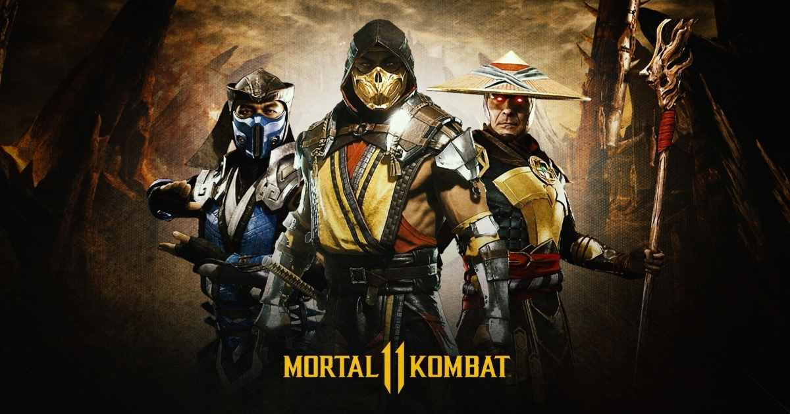
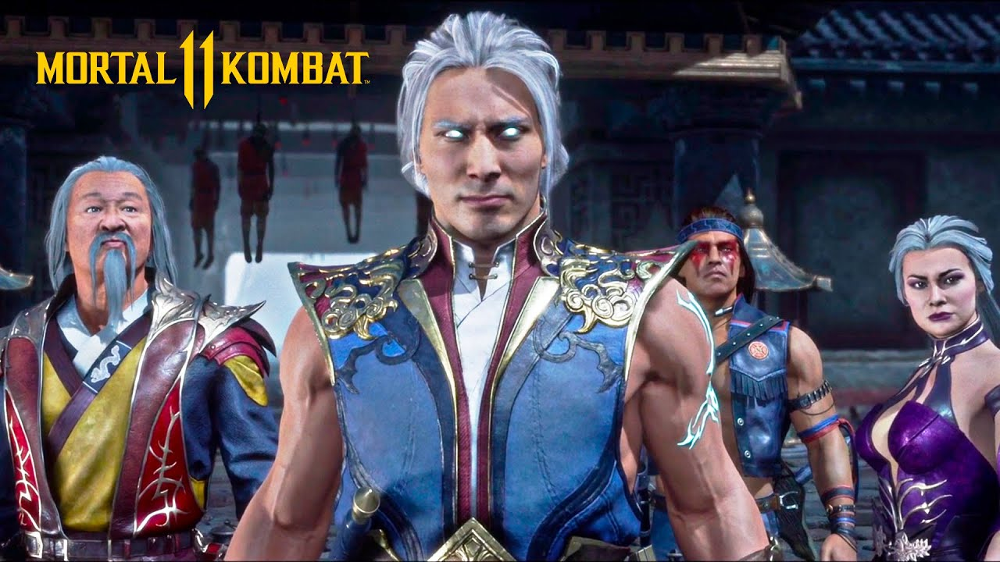

Al igual que los dos juegos anteriores de la serie, Mortal Kombat 11 es un videojuego de lucha 2.5D. Junto con el regreso de los Fatalities y Brutalities, se introducen nuevas características de juego, como Fatal Blows y Krushing Blows. Los Fatal Blows son movimientos especiales similares a los movimientos X-Ray en Mortal Kombat X. Al igual que los movimientos X-Ray, estos Fatal Blows infligen una gran cantidad de daño, pero a diferencia de ellos, solo están disponibles cuando la salud de un jugador cae por debajo del 30%, y solo se puede realizar una vez por partida. Los Krushing Blows es una variación cinematográfica especial de un movimiento especial dado, que se activa cuando se cumplen ciertos requisitos, como la mayoría de los Brutalities en el juego anterior. También nuevo en la serie es un mecánico Flawless Block, que permite una ventana de regreso después de bloquear un ataque con un tiempo preciso. Otro finalizador que regresa es Mercy, visto por última vez en Mortal Kombat 3, donde el jugador ganador puede optar por revivir a su oponente, dándole una pequeña cantidad de vida. En el pack de expansión Aftermath se incluyeron otros 2 finishers que regresaron de Mortal Kombat II, los Stage Fatalities, los cuales hacen que los escenarios acaben con la vida de los oponentes y los Friendships, estos últimos muestran a los personajes con su lado más amistoso, olvidando que estaban en un combate a muerte.
Mortal Kombat 11 presenta una característica de Variación personalizada que ofrece un sistema de personalización de personajes similar al sistema Gear en el videojuego de lucha anterior de DC Comics de NetherRealm Studios Injustice 2, mejorando con el sistema de variación presentado en Mortal Kombat X. Cada personaje tiene un conjunto inicial de atuendos, armas y movimientos, que el jugador puede personalizar aún más. Sin embargo, a diferencia de Injustice 2, en Mortal Kombat 11 la apariencia de los personajes no determina sus habilidades, lo que permite a los jugadores crear listas de movimientos personalizados independientemente de la apariencia de su personaje.
